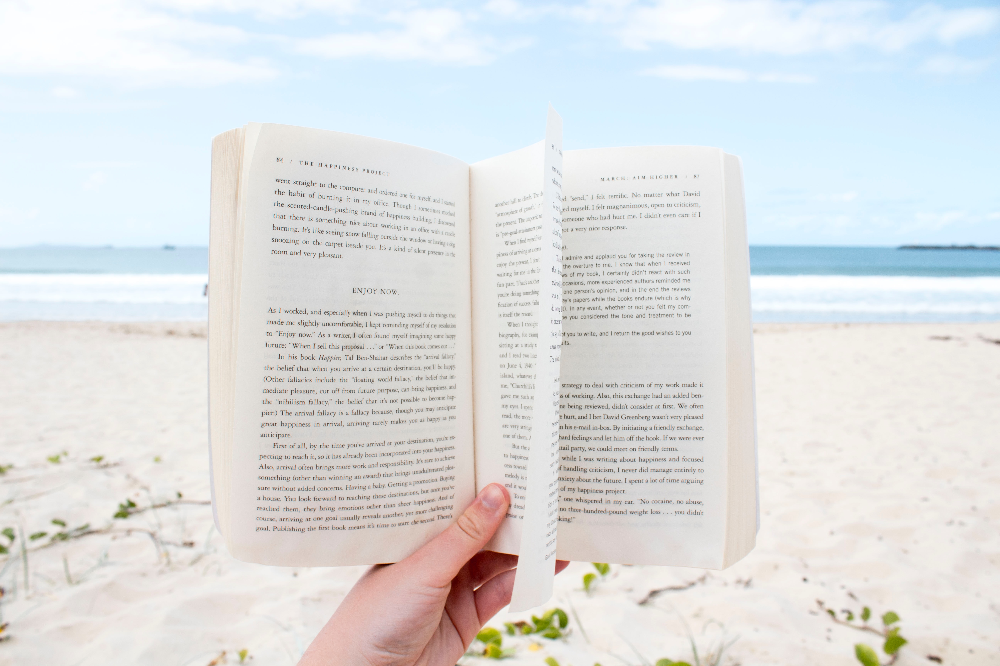

Summer is right around the corner. If you’re planning what you’ll read this summer, this list of books to read in summer is just for you.
Whether you’re heading to the beach, hanging out by the pool, or looking for something seasonal to dip into at home, a good book is the perfect accompaniment to your summer plans.
As temperatures rise, there’s never been a better time to escape into the pages of a great story.
The following ten titles are a mix of classic novels, lesser-known titles, and new releases, so you’re sure to find at least one book you’ll love to accompany you on your summer adventures!
The Summer Book, Tove Jansson
You may have heard of Finnish author Tove Jansson before, but most likely as the creator and writer of the Moomin books and comics for children.
Her books for adults are relatively unknown, but The Summer Book, written by Jansson in Swedish in 1972, is a short but sweet story that is perfect for the season.
Told through twenty-two vignettes, Jansson tells the story of six-year-old Sophia and her grandmother as they spend the summer on a tiny and unspoiled island in the Gulf of Finland. The loss of Sophia’s mother pervades throughout the book, though it is only mentioned explicitly once.
While Sophia slowly awakens to her place in the world, her grandmother is wise, unsentimental, and always tired.
As they explore the rough and uncultivated island around them, the old woman and the small child talk about life and death, love and nature.
Studying local bugs, building boats from bark, and creating a miniature version of Venice are the activities that provide an everyday summer backdrop to the kind of deep questions that fascinate both the young and the old.
Conspicuously absent from their conversations, however, is how they feel about the death of Sophia’s mother, and how they feel for one another.
The Summer Book is a truly fascinating book, beautifully crafted and incredibly heartfelt.
Jansson weaves together old and young, life and loss, absence and presence, and sets them within the context of a long hot summer in which “everything lived and grew at its own pace.” The perfect place to jump right into your summer reading.
Little Women, Louisa May Alcott
Little Women has been having a recent revival, thanks to the success of the 2019 movie adaptation. If you loved the movie but have never read the novel, summertime is the perfect time to commit to reading this classic.
Originally published in two volumes in 1868 and 1869, Little Women is a semi-autobiographical novel by Louisa May Alcott.
It would be fair to say that generations of readers have fallen in love, and identified, with the four March sisters. Beautiful elder daughter Meg, aspiring author and tomboy Jo, frail and sickly Beth, and spoiled, materialistic Amy.
Despite their differences, the girls are united in their devotion to one another and their resolution to survive the Civil War in New England.
Like her character Jo March, Louisa May Alcott realized that she could make more money writing than through traditional ‘women’s work’ of domestic service. Thomas Niles, Alcott’s publisher, approached her in 1868 to write a book about girls that would have widespread appeal.
Despite her initial protests, and the fact that she didn’t enjoy starting the book, Alcott wrote Little Women in record time and was surprised by its immediate success.
Little Women is so much more than the story of four sisters. It draws on the timeless literary themes of war and peace, life and death, love and culture, and the choices we are forced to make between personal ambition and family responsibility.
On The Road, Jack Kerouac
If, for you, summer means adventure, On The Road is the perfect book to accompany you on your travels. This is another semi-autobiographical novel, part of the genre known as roman á clef, which is based on Kerouac’s travels across America with his friends.
On The Road began life as a series of notebooks in the late 1940s. It was impressively typed out on a continuous reel of paper in April 1951, and eventually published in 1957.
It follows the narrator, Sal Paradise (Kerouac), who leaves behind a broken marriage and is inspired to travel by his free-spirited friend Dean Moriarty (based on Neal Cassady). Written in five parts, the narrative takes place from 1947 to 1950 and follows the friends journey from New York to San Francisco, then down into Mexico.
Riding buses and hitching rides, Sal and Dean enter a world of hobos, fruit-pickers, migrant families, and small town mentalities. They find themselves living outside of conventional society, drifting, but experiencing a new kind of America: one where “life is holy and every moment is precious,” however hard it might seem.
On The Road contains some of the most famous and oft-quoted lines in literature, exploring the uniqueness of the American landscape while fostering a sense of adventure in its readers.
Kerouac effortlessly captures the atmosphere of a fifties alive with jazz music, poetry, and drug use. A true modern classic, On The Road is a summertime novel you’ll want to revisit again and again.
Rebecca, Daphne du Maurier
Rebecca is the one novel I’ve tried to reread every summer since my early teens.
Written by Cornish author Daphne du Maurier, Rebecca is the story of an unnamed young woman who meets and marries a widower, returning to his country estate to find it haunted by the memory of his first wife Rebecca.
Published in 1938, this Gothic novel has never gone out of print. It is the perfect summer novel, with its brooding atmosphere and evocative descriptions of both Monte Carlo and the beautiful Manderley Estate. We experience the flush of young love as our unnamed narrator encounters the handsome Max de Winter, and her sense of fear and foreboding as she meets the sinister Manderley housekeeper, Mrs. Danvers.
Over the course of the novel, we learn more and more about Rebecca and all isn’t quite as rosy as it first seemed.
Far from needing to be reminded of Rebecca and her way of doing things every day, what Max (and his new bride) really need is a totally fresh start. They will get the fresh start they so desperately need, but at what cost?
This page-turner is an incredibly written novel that will keep you on your toes until the very end.
Rebecca was the gateway that really got me into reading the rest of Daphne du Maurier’s works, and there’s no better time than the summer to discover your new favorite author.
Death on the Nile, Agatha Christie
To me, nothing says “summer vacation read” like a murder mystery, and nobody writes a murder mystery quite like the Queen of Crime. Published in November 1937, Death on the Nile follows one of Agatha Christie’s most loved detectives – Hercule Poirot – on an adventure to Egypt.
Holidaying in Cairo, the Belgian detective is approached by wealthy socialite Linnet Doyle. She hopes that Poirot might be able to help her with a problem: her former friend, Jacqueline de Bellefort, has been stalking and hounding her since Linnet married Jacqueline’s former fiancé Simon Doyle.
Poirot refuses the mission, but unknowingly ends up embroiled in the affair when he, Linnet, Simon, and Jacqueline all end up on board the Karnak steamer for a cruise along the Nile.
We encounter a supporting cast of interesting characters aboard the Karnak, and together go on an adventure through Egypt, sightseeing along the way. If you’re familiar with any of the movie or TV adaptations of Christie’s mysteries, but have never read the books, summer is the perfect season to jump right in.
Whether you’re beside the pool, at the coast, or just enjoying the sunshine outside, Poirot’s sharp wit, hilarious quirks, and inquisitive mind provides the perfect companion – you’ll be wondering “whodunnit?” from the outset.
Where the Crawdads Sing, Delia Owens
Published in 2018, this is one of the newest books on our list of summer reads. Nonetheless, it has amassed a considerable number of accolades.
It was a New York Times Fiction Bestseller for 30 consecutive weeks between 2019 and 2020, and sold more than 4.5 million copies in 2019, more than any other adult title. Where the Crawdads Sing tells its story through two timelines as they begin to intersect and intertwine with one another.
Timeline number one follows a young girl named Kya, as she grows up on a North Carolina marsh between 1952 and 1969. Her mother, followed by her four older siblings, all leave, leaving Kya alone with her father. Pa drinks heavily and takes frequent, long trips away from the marsh to gamble. When he fails to return at all, Kya has to learn to look after herself, facing the ridicule and and prejudice of the nearby townspeople who call her “The Marsh Girl.”
Timeline two follows the murder investigation of nearby town Barkley Cove’s star quarterback Chase Andrews. As Kya begins to turn her life around and make something of herself, she is dragged into the Andrews trial and forced to face the same old prejudice all over again.
Beautifully written and thought-provoking, if you’re one of the few people who haven’t yet read Where the Crawdads Sing, this summer is the perfect time to do so.
Love in the Time of Cholera, Gabriel Garcia Marquez
First published in Spanish in 1985 and translated into English in 1988, Love in the Time of Cholera tells the story of Florentino Ariza and Fermina Daza. Assisted by the girls aunt, a secret romance blossoms between the young couple through the medium of letters.
When Fermina’s father, Lorenzo Daza, finds out about their romance, he forbids her from seeing him again. She refuses, remaining in contact with Florentino via telegram when she is taken away to another city.
Upon her return, however, Fermina realizes that the two know nothing about one another, breaks off their engagement, and returns his letters. She caves to her fathers wishes and ends up marrying the young and accomplished national hero, Dr. Juvenal Urbino. He is committed to the eradication and prevention of Cholera, an epidemic that is raging at the time.
Even with Fermina married, Florentino – who suffers physically with Cholera-like-symptoms after their relationship ends – swears to stay faithful and wait for her.
When Urbino has a tragic accident and dies in old age, Florentino declares his undying love for Fermina and reveals he has always been faithful to her. Despite being newly widowed, Fermina gives him a chance and the two attempt a life together.
Gabriel Garcia Marquez was an unparalleled master of lyrical, romance writing. Love in the Time of Cholera is at its heart a sentimental story about the enduring power of true love.
It also explores much deeper issues about the way love makes us feel and how we (and our relationships) are affected by aging and death. Explore these romantic themes as you are transported to a beautiful sunny port city in Colombia this summer.
The Group, Mary McCarthy
If you’re looking for a beach read with a little more backbone, I have a feeling that The Group is the book you’ve been looking for! It’s also the perfect novel for newly graduated gals who are using the summer to breathe before taking the next step.
Published in 1963, Mary McCarthy’s best-known novel follows the course of eight girlfriends who graduate from Vassar College in 1933. It beginnings with the marriage of one of the girls, Kay Strong, and focuses on each of their lives post-graduation. While the girls all struggle with different issues, they realize these issues all center around the men in their lives.
Whether they encounter sexism in the workplace, financial difficulties, difficult sexual relationships, issues with childrearing, or other family crises, in almost every case, their husbands, fathers, employers or lovers are to blame.
Largely influenced by the political and economic issues prevalent at the time, The Group offers a fascinating account of the way that highly educated, affluent women struggled for their autonomy and independence in an age when they were expected to stay at home.
They form opinions on issues we take for granted, like contraception, sex, marriage, socialism, and more.This isn’t a heavy read, but it is engaging.
You’ll quickly find yourself wrapped up in the story of Kay, Mary, and Dottie and their friends, cheering them on and sharing in their frustrations as they encounter a lifetime of difficulties and victories. Think of it as a 1930s Sex and the City, best enjoyed with a cocktail by the pool.
Blackberry Wine, Joanne Harris
This is an interesting summertime novel packed with rich descriptions of fruit, flowers, and sunshine.
Blackberry Wine was published in 2000 by British author Joanne Harris, and has a whimsical split-narrative that makes for perfect summertime reading.
Told from the unique perspective of a bottle of homemade wine, Blackberry Wine follows two intimately connected stories, decades apart. First, a young Jay Mackintosh spends his summers in the Yorkshire village of Kirby Monckton with an eccentric old gardener called Joseph Cox.
Next, Jay Mackintosh, now the successful author of ‘Jackapple Joe,’ buys a house in the French village of Lansquenet-sous-Tannes while under the influence of Joe’s homemade wine.
Inspired by Joe’s “Specials” to write again for the first time in a decade, Jay begins a new life in France and becomes enthralled with his mysterious neighbour, Marise.
Blackberry Wine, like all of Joanne Harris’ books, tells a simple tale that has many hidden complexities. It’s the perfect book for summer, and you’ll find yourself guzzling it down quickly like cold lemonade on a hot day.
Big Summer, Jennifer Weiner
If you’re looking for an easygoing, untaxing read, the last one on our list is for you. Big Summer is the perfect novel to slip into your beach bag or dip into by the pool, and it’s the newest title on our list (published May 2020).
Jennifer Weiner is the #1 New York Times bestselling author of sixteen books, and her latest title is one of the more enjoyable examples of escapist fiction.
Big Summer tells the story of Daphne Berg, a woman who casts off her shy, self-effacing high-school ways, and carves out a career for herself as a plus-size Instagram influencer.
When her successful old friend Drue Cavanaugh re-enters her life out of the blue and asks her to be maid-of-honor in her society wedding, Daphne finds it difficult to resist the charms of her ex-best friend.
This is an easy story about the innermost workings of female friendships that raises relevant issues about the difficulties of living your life online, letting others in, and moving beyond the past.
Big Summer is all about working out what really matters in life, and for that reason, it’s a well-written and witty novel that you’ll find yourself wanting to chat about with friends this summer.

“One benefit of summer was that each day we had more light to read by.” – Jeanette Walls, The Glass Castle
If you’ve yet to find our reading guides for Fall, Winter, and Spring, make sure you take a look.
If your favorite book to read in summer is missing from our list, share it with our readers below. I’m always looking for new recommendations!
Copyright © 2011-2022. The Quotes Hub. All Rights Reserved.
Leave a Comment